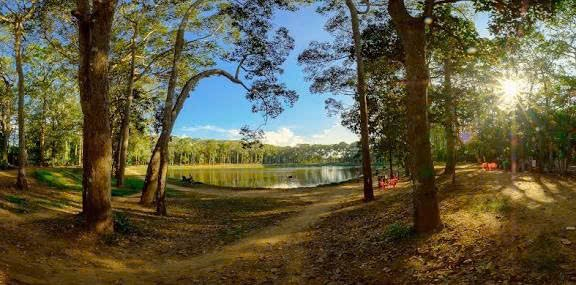
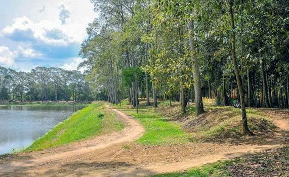
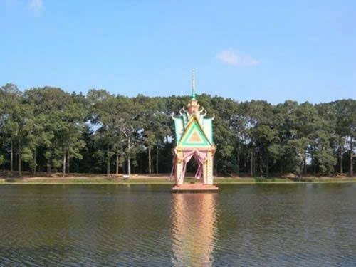

Danh thắng nổi tiếng gắn liền với truyền thuyết và văn hóa Khmer Nam Bộ.
Ao Bà Om, còn được gọi là Ao Vuông, nằm tại thành phố Trà Vinh và là một trong những thắng cảnh nổi tiếng nhất của vùng đất này. Ao có hình chữ nhật đặc biệt, mặt nước phẳng lặng, bao quanh là hàng cây cổ thụ hàng trăm năm tuổi tạo nên khung cảnh thiên nhiên thơ mộng, yên bình.
Theo truyền thuyết dân gian Khmer, ao được đào trong một cuộc thi giữa nam và nữ để giành quyền cưới hỏi. Nhờ mưu trí và sự thông minh của người phụ nữ tên Om, bên nữ đã chiến thắng và ao được đặt tên theo bà. Câu chuyện thể hiện tinh thần đoàn kết, trí tuệ và vai trò của người phụ nữ trong văn hóa cộng đồng Khmer.


